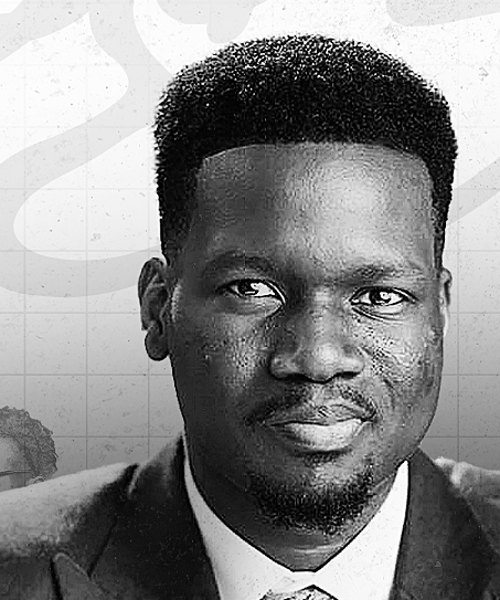
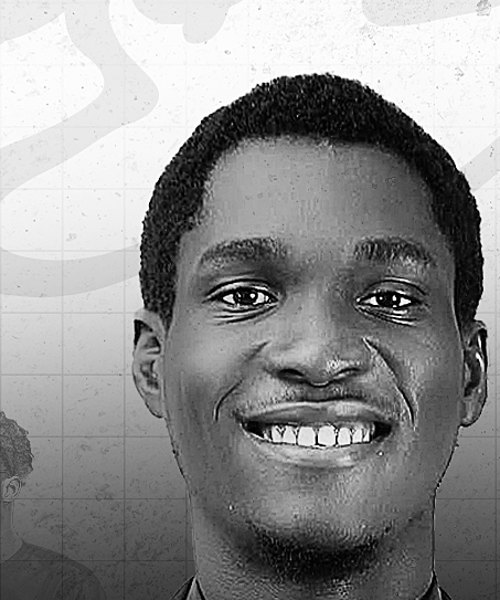
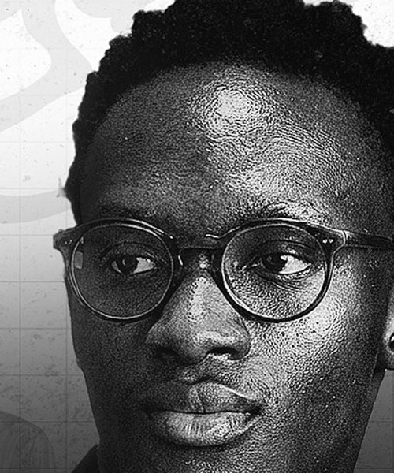
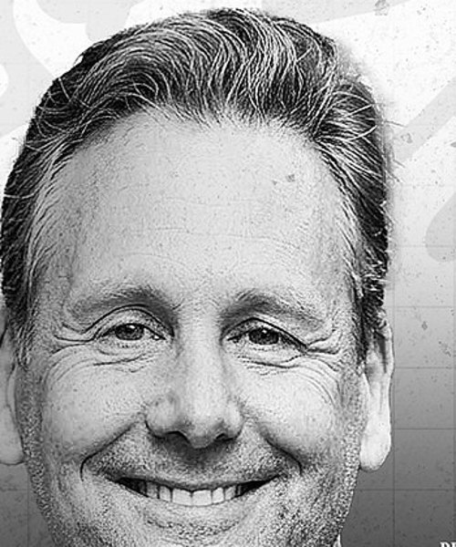

Apologetics Nigeria
A three-day introduction to apologetics for believers who are tired of going quiet when the hard question comes. Everything you need for the three evenings is in this pack. Please keep it.
Attendee pack
Defending the Faith
Introduction to Apologetics · live online
Dates
Fri 16 –
Sun 18 Oct
Each evening
7–10PM
WAT
Format
Live online
free
Your seat
Thank you for registering, and welcome. Everything is in one place here so nothing depends on an email thread. Please keep it — the joining link on the last page does not change.
Lagos & London
7–10PM
Toronto & New York
2–5PM
Houston
1–4PM
Los Angeles
11AM–2PM
The programme
Each evening runs three hours. Come to all three if you can; each one stands on its own if you cannot. No prior study is assumed. Come as you are.
Day01
Friday 16 October · 7–10PM WAT
With Pastor Ernest Olusanya
Day02
Saturday 17 October · 7–10PM WAT
With Daniel Odili & MANNORR
Day03
Sunday 18 October · 7–10PM WAT
With Ben Clifton & MANNORR
Each evening
So you know where each evening is going. Timings are a guide and may move by a few minutes on the night; the room opens at 6:45PM WAT every evening.
Fri 16 Oct
Sat 17 Oct
Sun 18 Oct
Who is teaching
Each evening is carried by someone who has spent years with the material — and every session ends with live Q&A, so you can ask them directly.

Day 01 · Friday 16 October
Guest speaker
Foundations — what apologetics is, the case that God exists, and why the Bible can be trusted as history.

Day 02 · Saturday 17 October
Guest speaker
Why Jesus? — the question the whole evening turns on. Daniel opens Day Two before it moves into what Islam rejects about him.

All three evenings
Host · Founder, Apologetics Nigeria
Examines the claims of Islam through its own trusted sources and makes the historical case for Christ. On Day Two, takes the evening through his deity, his death and his resurrection.

Day 03 · Sunday 18 October
President of Apologetics on Mission
Answering the claim that there is no evidence for God — followed by live Q&A.
“But sanctify the Lord God in your hearts: and be ready always to give an answer to every man that asketh you a reason of the hope that is in you with meekness and fear.”
1 Peter 3:15
Joining
Your link — the same every evening
Bookmark this page rather than any meeting address. If the meeting room ever changes, this page updates silently and your link keeps working. The room opens fifteen minutes before we begin.
Your joining link will also be emailed to you before the first session, and again on the day. Nothing else is needed — no app, no account, no ticket. Trouble getting in? Reply to your confirmation email or message us on Instagram, @apologeticsnigeria.
Reminders, updates and questions between sessions — and the place to ask the things you would rather not ask live. Join from the link on your confirmation page.
As with any WhatsApp group, members can see each other’s phone numbers. If you would rather not, stay on email and you will miss nothing.
Know someone who has gone quiet when the hard question came? Send them the training. Registration is open until the first session at apologeticsnigeria.com/training.
Coming as a church group or fellowship? Ask each person to register with their own email so they receive their own joining link and replays.
Every session, every recording and every set of notes is given away without charge, so that no believer is priced out of being able to answer for their faith. If you would like to help us keep it that way, you can give at apologeticsnigeria.com/partner. Nothing is expected — your seat is yours either way.
See you on the 16th. — Soli Deo Gloria
MANNORR
Founder, Apologetics Nigeria
apologeticsnigeria.com